Banjir Sering Masuk dari Pintu Rumah?
Sekat banjir custom sesuai ukuran pintu. Melindungi rumah, keluarga dan barang berharga Anda.
Konsultasi Ukuran via WhatsApp →Air di luar tetap di luar
Rumah Anda tetap aman
-
Custom
ukuran pintu -
Praktis
dipasang -
Untuk rumah, ruko
dan garasi
Karung Pasir Merepotkan, Renovasi Mahal, Banjir Tetap Masuk
Setiap hujan deras Anda harus bersiap lagi. Karung pasir berat, berantakan, dan tidak selalu efektif. Floodbar hadir sebagai solusi yang lebih praktis dan rapi.

karung pasir
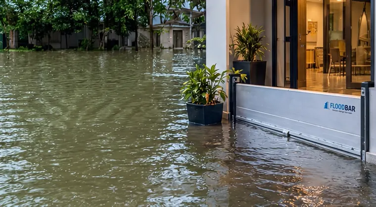
Floodbar Custom
Kenapa Memilih Floodbar?
-
Custom Sesuai Ukuran Pintu
Dibuat mengikuti ukuran bukaan pintu Anda.
-
Praktis Dipasang
Dirancang agar pemasangan dan pelepasan lebih sederhana saat dibutuhkan.
-
Untuk Berbagai Akses
Bisa digunakan untuk pintu depan, pintu samping, garasi, dan bukaan lainnya.
Cuma 3 Langkah Mudah
-
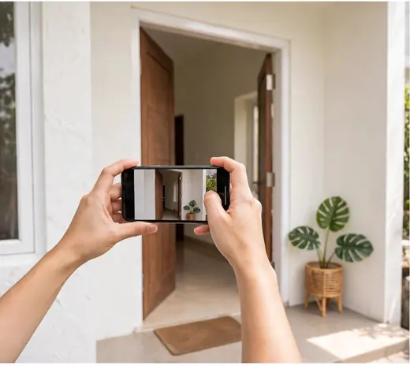
Foto Pintu
Ambil foto pintu yang ingin dipasang Floodbar.
-
Ukur Lebar & Tinggi
Ukur bukaan pintu sesuai panduan kami.
-
Kirim ke WhatsApp
Kirim foto dan ukuran, tim Floodbar bantu cek solusinya.
- Kirim Foto & Ukuran Sekarang
Cara Mengukur Pintu
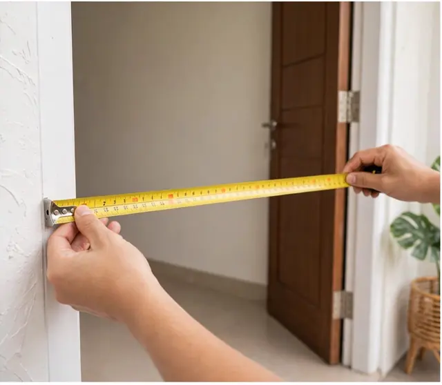
Panduan Ukur Singkat
- Ukur lebar bukaan pintu dari kusen ke kusen.
- Tentukan tinggi Floodbar yang diinginkan.
- Kirim foto pintu dan hasil ukuran ke WhatsApp.
Tidak yakin cara mengukurnya?Kirim foto pintu dulu, tim Floodbar bantu arahkan.
Bantu Saya UkurGaleri Pemasangan Nyata
Contoh detail produk dan pemasangan Floodbar pada akses rumah.
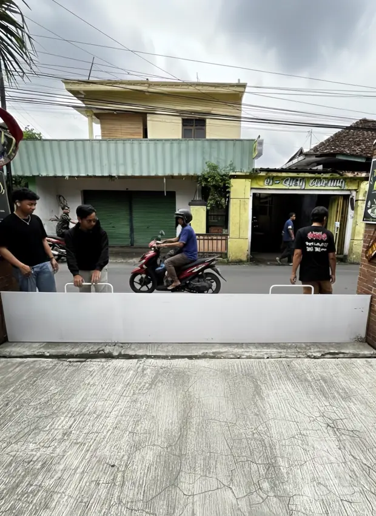
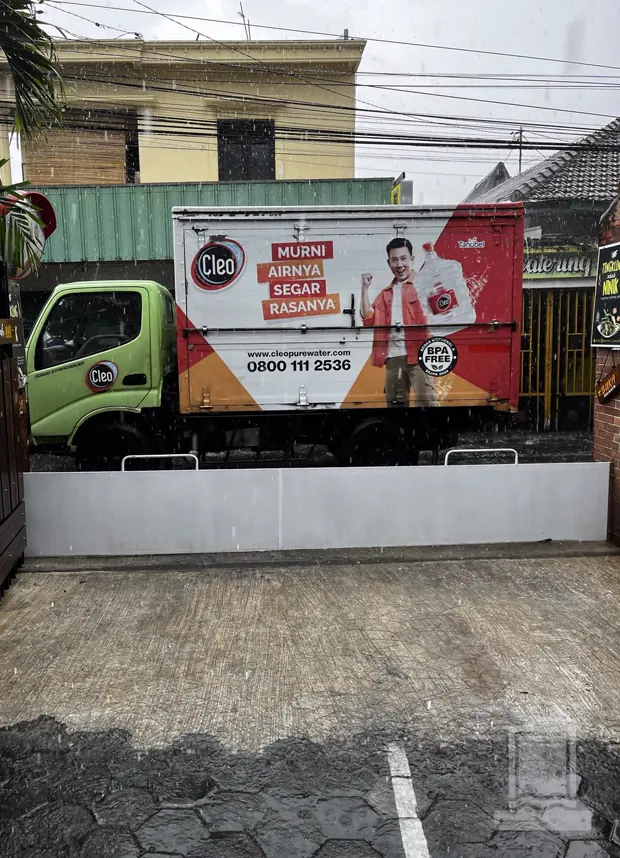
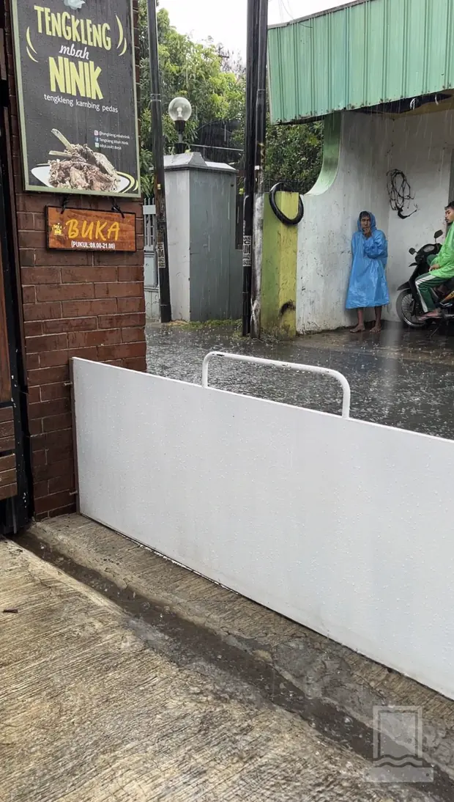
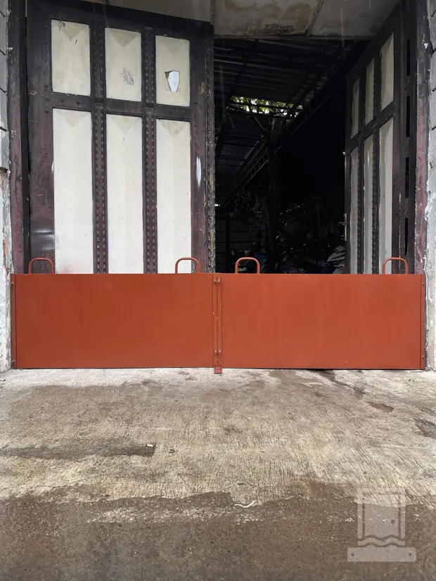
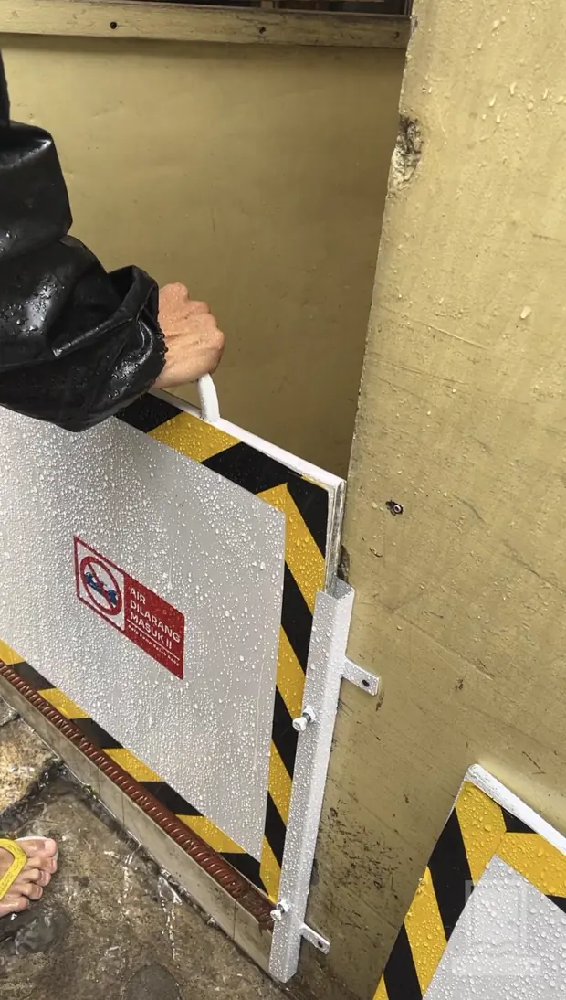
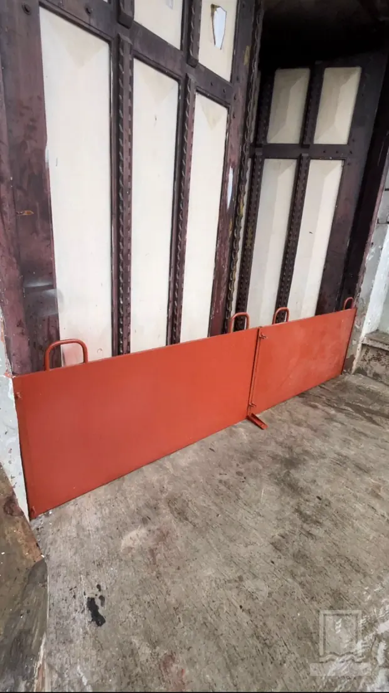
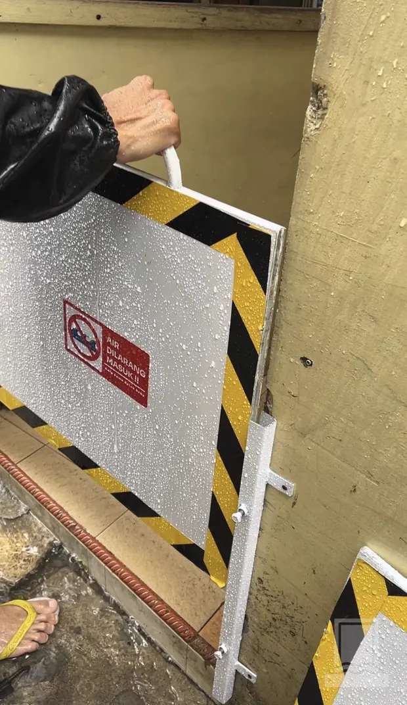
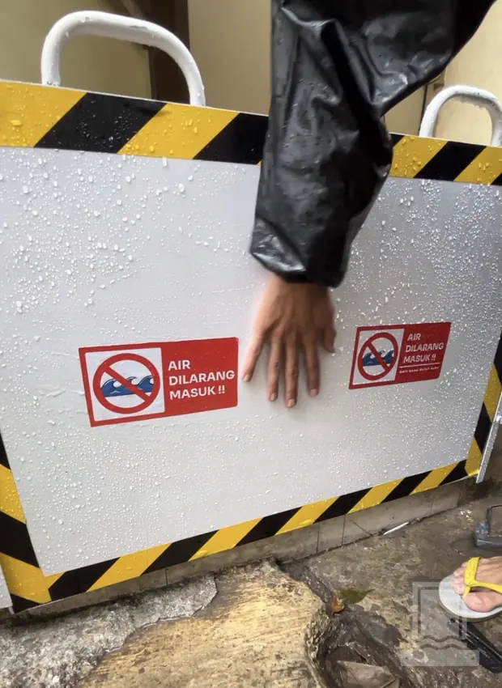
Estimasi Harga Sesuai Ukuran
“Pemasangannya rapi dan tidak perlu lagi menyiapkan karung pasir setiap kali hujan deras.”Budi, Bekasi, Rumah Tinggal
Pertanyaan yang Sering Diajukan
Apakah Floodbar dibuat sesuai ukuran pintu?
Ya. Ukuran dibuat mengikuti lebar bukaan dan tinggi perlindungan yang dibutuhkan.
Apakah bisa dipasang dan dilepas?
Floodbar dirancang agar panel dapat digunakan saat dibutuhkan dan akses pintu kembali terbuka setelahnya.
Akses apa saja yang bisa dipasangi?
Pintu rumah, pintu samping, ruko, garasi, dan bukaan lain dapat dikonsultasikan berdasarkan foto serta ukurannya.
Data apa yang perlu disiapkan untuk konsultasi?
Siapkan foto bukaan pintu, ukuran lebar dari kusen ke kusen, dan tinggi Floodbar yang diinginkan.
Siap Lindungi Rumah dari Banjir?
Siapkan foto dan ukuran pintu Anda untuk memulai konsultasi.